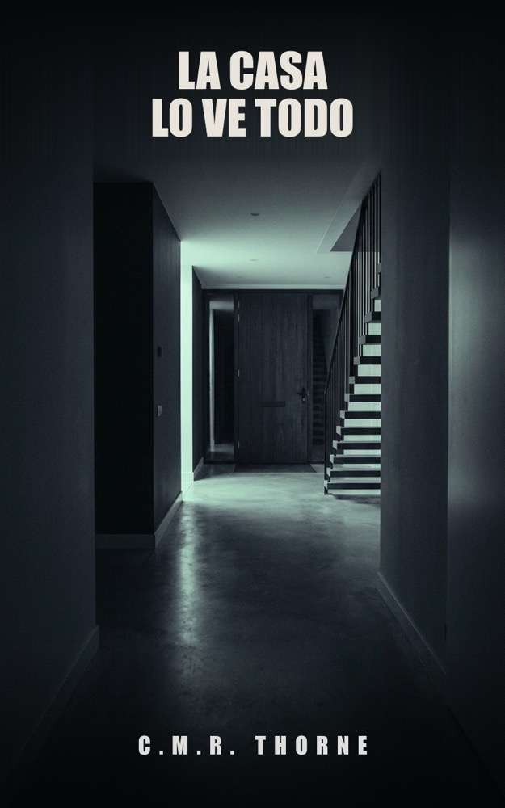
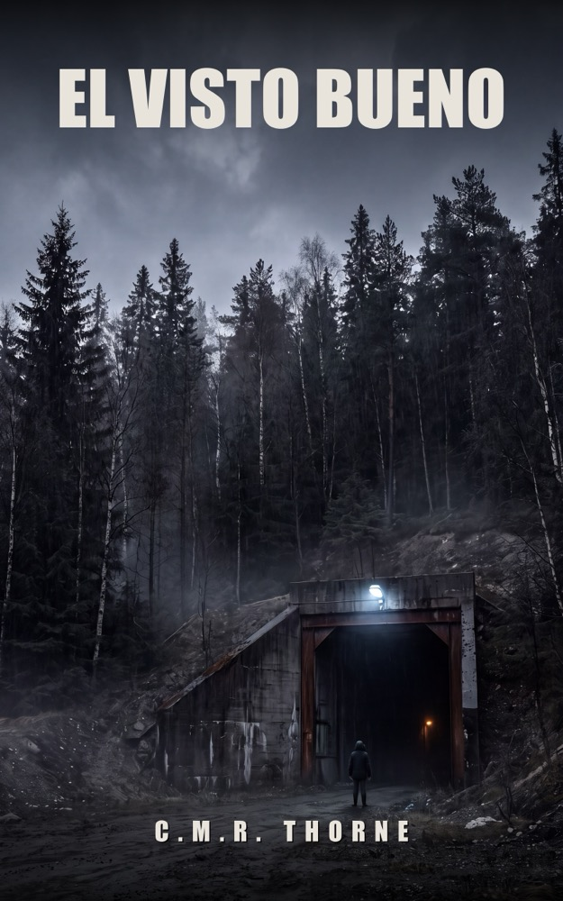
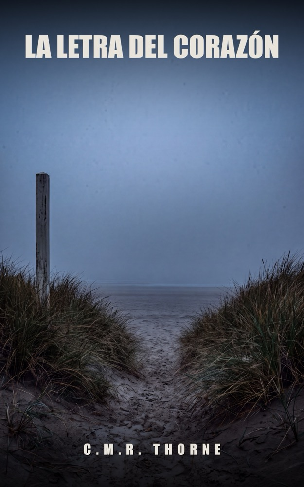
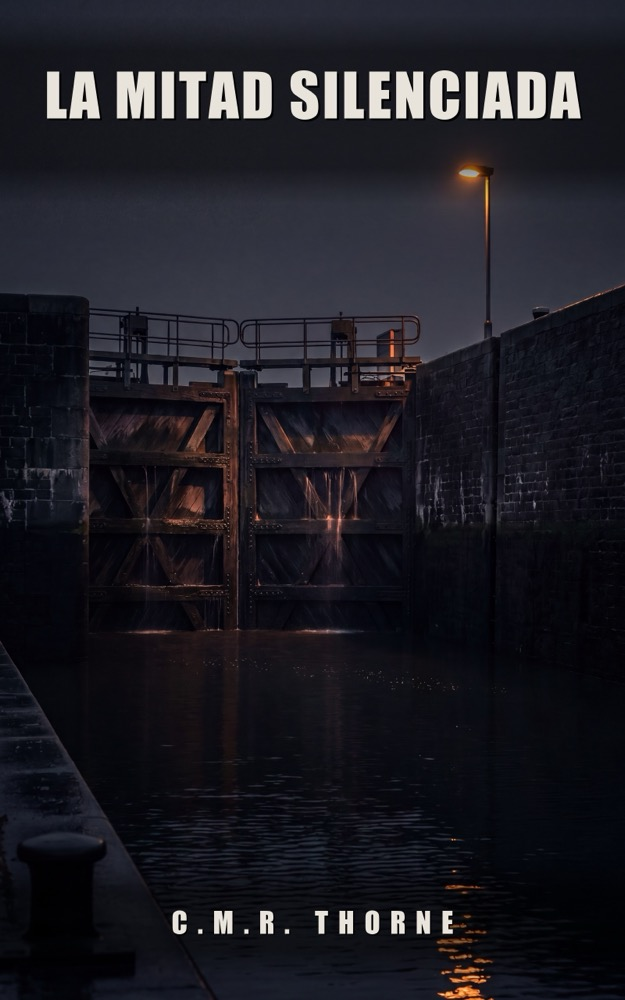
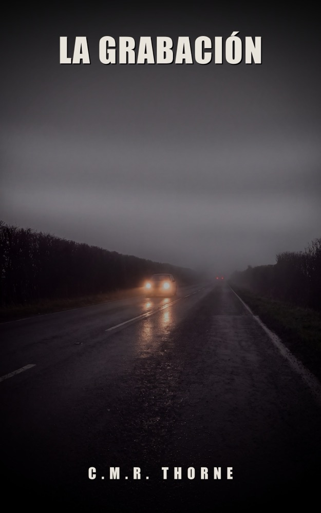
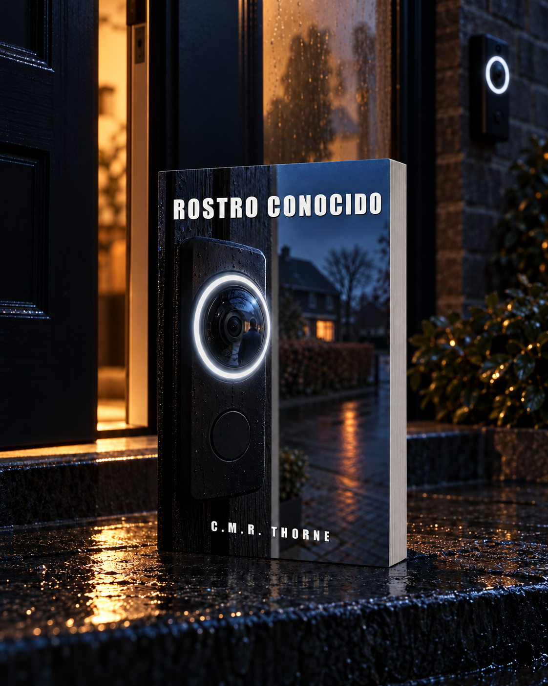

CASO 01

Ya disponible
La Casa Lo Ve Todo
La puerta de la calle se abrió a las 3:12. Mientras él dormía.
Ver en AmazonSobre este libro y un fragmento LOWLANDSPRESS
LOWLANDSPRESSThrillers psicológicos de C.M.R. Thorne, en cuatro idiomas. En cada libro había un aparato mirando.
Elige un libro

La puerta de la calle se abrió a las 3:12. Mientras él dormía.
Ver en AmazonSobre este libro y un fragmento
Cinco muertos. Una firma falsificada. Y un caso que llevaba ocho años enterrado.
Ver en AmazonSobre este libro y un fragmento
Su reloj anotó el último latido. La letra de esa curva no se parece a la de Bram.
Ver en AmazonSobre este libro y un fragmento
Una prueba de ADN revela que el chico sentado a su mesa no es el chico al que ella dio a luz.
Ver en AmazonSobre este libro y un fragmento
Un clip de dashcam demuestra que la investigación de la muerte de Niek Veldkamp partió de la hora equivocada.
Sobre este libro y un fragmento
El timbre de la vecina pone un nombre al hombre que está en la puerta. Pero no es él.
Sobre este libro y un fragmentoEl manuscrito está terminado en neerlandés, inglés, alemán y español. La edición espera el último paso en las tiendas.
Una tarjeta escolar registró quién entró aquella tarde. Su propio escaneo marca una hora que no encaja.
El séptimo libro se está escribiendo. Título provisional en neerlandés. Todavía sin fecha de publicación.
Las tiendas enseñan sobre todo lo que se lee y se comenta, y quien todavía no tiene nombre depende de eso más que de nada. Bastan unas líneas sinceras. Déjalas donde compraste el libro; abajo están los enlaces directos de Amazon.
Escribe una reseña: